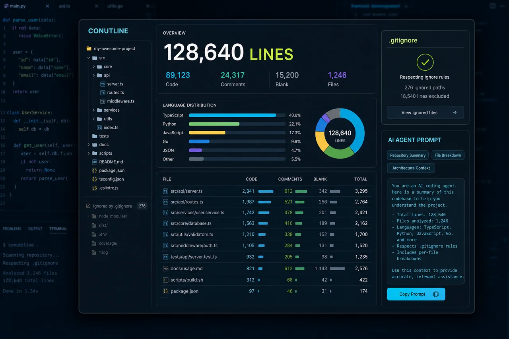

游戏 / 客户端↗TRIBAL BATTLEFIELD ARCHITECTURE2026部落战 · 3D争夺能量核心的 3D 实时战斗与战役系统GodotGDScriptComponent System
游戏 / 客户端↗SIDE-SCROLLING TRIBAL WARFARE2026部落战 · 2D从左右营地出兵、争夺核心的横版战斗游戏Godot 2DGDScriptComponent System
服务 / 网络↗WIRELESS DISPLAY SESSION ENGINE2026Miracast Connect Service连接 Linux 与 Windows 设备的无线投屏服务C++LinuxWindows
开发工具↗CODEBASE STATISTICS2026conutline统计代码行数和文件分布，生成 AI 仓库概览CLIStatic AnalysisGitignore Rules